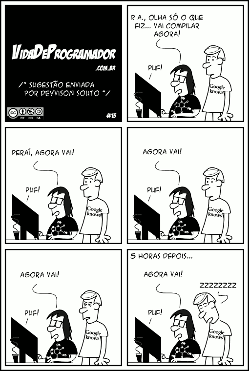
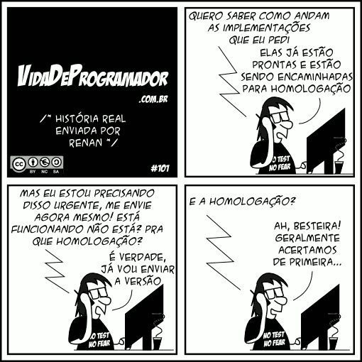

ABAP Unit
Automatizando o trabalho chato
Valdir Mendes
SAP Inside Track BH - 2019
Quem sou eu?
- Meu nome é Valdir Mendes
- Estudante/amante de desenvolvimento de software e tecnologia
- Arquiteto de software na Seidor Veritas
- Organizador do Meetup SAPiens BH

Novo método de desenvolvimento
Cenário atual
- Nova demanda
- Codificar/implementar
- Executar/testar
- Debugar
- Corrigir bugs
- Loop até finalizar
Sistema legado/correção de bugs
Testes do funcional/cliente
Quanto tempo eu gasto?
- Codificando regras que não sei onde irá impactar?
- Aguardando alguém testar?
- Aguardando cenário de teste?
- Executando testes manuais, repetitivos e passíveis de erro?
- Debugando para encontrar erros (pré e pós desenvolvimento)?
- Corrigindo bugs usando tentativa e erro? (go horse)
No que isso impacta?
Na garantia do meu/seu trabalho!
Solução?
Automatizar testes!
Testes unitários e ABAP Unit
Testes Unitários
É uma abordagem de teste de software onde as unidades/componentes de um software são testadas individualmente.
Testes Unitários
Objetivos
- Encontrar erros o mais breve possível
- Escrever uma vez, executar sempre
- A execução deve ser automatizada: Framework de testes
ABAP Unit
É uma ferramenta de teste integrada ao ambiente de desenvolvimento ABAP que você pode usar para executar testes de unitários. Pode ser executada manualmente ou automaticamente.
Fonte: Documentação SAP